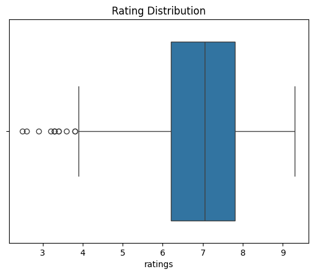
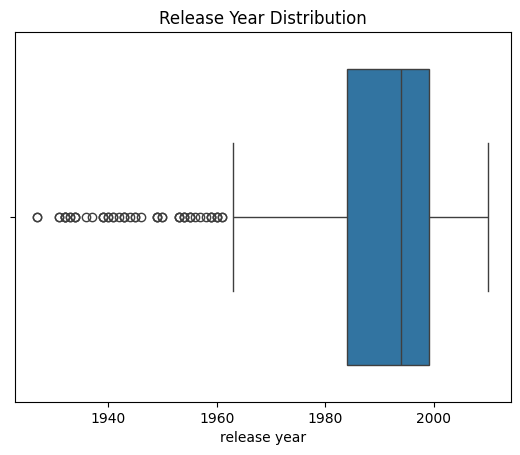
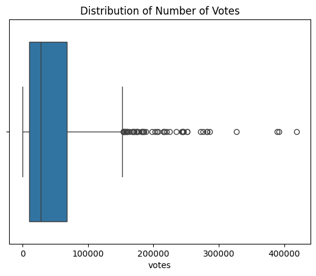
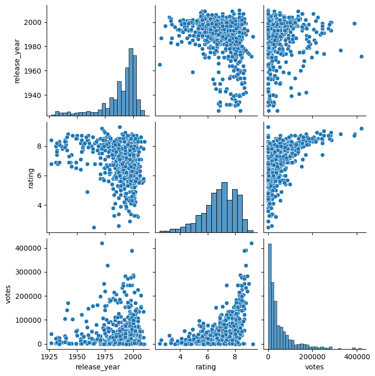
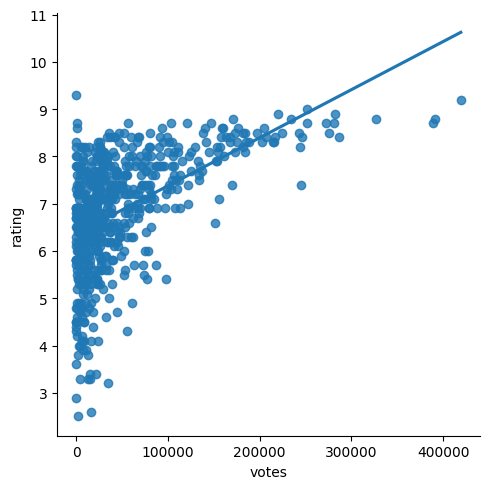

EDA Summary:
The EDA examines variables like ratings, year of release, and number of votes. Key statistical methods include descriptive statistics and plotting with bar plots, scatter plots, and graphs to explore how certain factors change over time. The dataset is cleaned by converting the 'release_year' column to numeric and dropping rows with missing values. The shape of the cleaned dataset is analyzed, along with descriptive statistics and correlations among numeric variables such as 'release_year', 'rating', and 'votes'.
  
The year and votes sbow relatively more outliers compared to ratings, which makes sense since ratings have a much more dense numeric range than the other two.

There is no obvious linear trend between most of these numeric variable pairs, but let us take a deeper look into votes v.s. ratings.

There seems to be a relativey positive trend between these two, which means that great movies tend to have more votes.